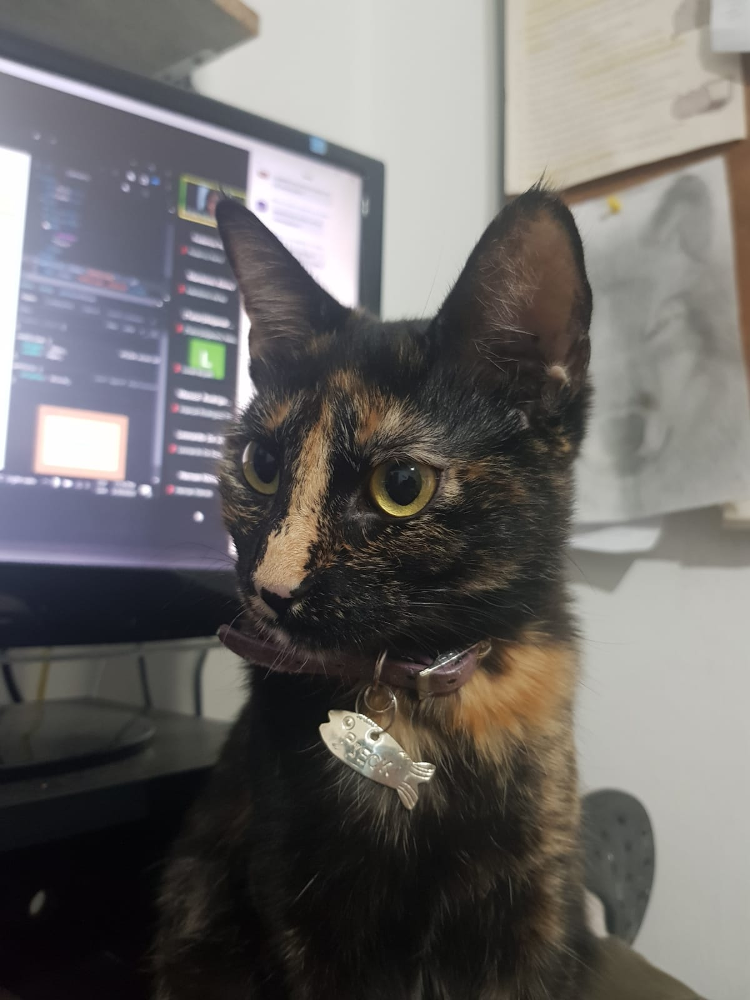
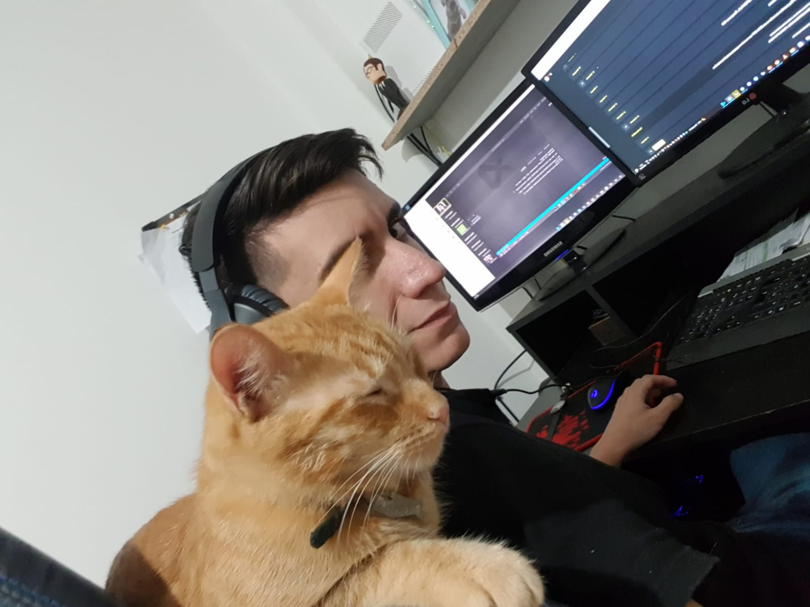
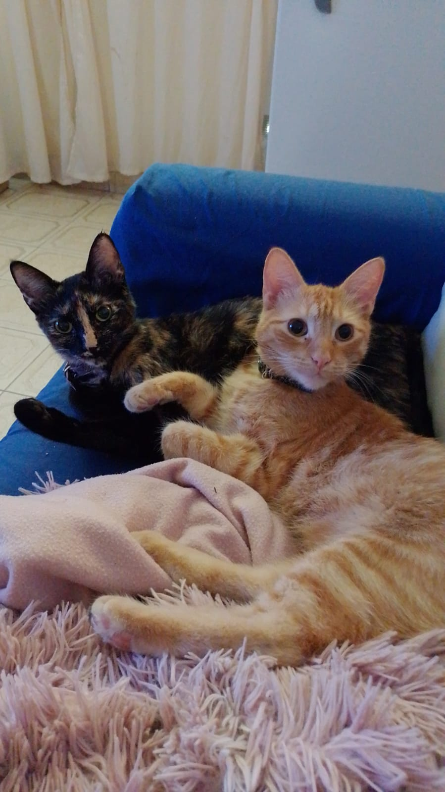

Pieck media por la paz entre Rusia y Ucrania
La gatita marmolada logra grandes avances diplomáticos en el conflicto asiático, luego de rasguñar a ambos mandatarios de las naciones involucradas.

Sexto no asistió a la reunión con el FMI: Se quedo dormido otra vez

¿En verdad son hermanos?
